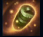
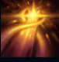
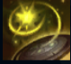
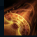
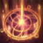

Bard
| Bard The Wandering Caretaker | |
|---|---|
| Release date | 12.03.2015 |
| Class | Catcher |
| Positions | Support |
| Resource | Mana |
| Range type | Ranged |
| Adaptive type | Magic |
| Base statistics | |||
| Health | 560 – 2073 | Mana | 350 – 1200 |
| Health regen. | 5.5 – 14.85 |
Mana regen. | 6 – 13.65 |
| Armor | 34 – 102 | Attack damage | 52 – 103 |
| Magic resist. | 30 – 38.5 | Crit. damage | 175% |
| Move. speed | 330 | Attack range | 500 |
Bard este un călător venit de dincolo de stele, o unealtă a destinului care luptă pentru a menține echilibrul și a se asigura că viața rezistă în fața haosului. Deși mulți locuitori ai Runeterrei i-au dedicat rătăcitorului cosmic felurite cântece și i-au slăvit trăsături care mai de care mai ieșite din comun, toți sunt de acord că este atras de artefacte cu puteri magice deosebite. Nimeni nu-l poate bănui pe Bard de gânduri malefice. Înconjurat de un cor vesel de spirite săritoare numite mipi, acesta slujește întotdeauna binele... în propriul său fel. |  |
CHEMAREA RĂTĂCIRII Mipi: Bard atrage spirite micuțe care îi intensifică atacurile de bază pentru a provoca daune magice bonus. După ce Bard adună suficienți clopoței, și mipii săi vor provoca daune într-o zonă și vor încetini inamicii loviți. Clopoței: pe hartă apar la întâmplare clopoței străvechi care pot fi adunați de Bard. Aceștia îi oferă experiență, mană maximă și cumuluri de viteză de mișcare în afara luptei. |
||
|---|---|---|---|---|
 |
ȚINTUIRE COSMICĂ Bard lansează un fulger de energie care îl va încetini pe primul inamic lovit și apoi își va continua drumul. Dacă vraja lovește un perete, ținta inițială va fi amețită; dacă lovește un alt inamic, ambii vor fi amețiți. |
|||
 |
ALTARUL OCROTIRII Dezvăluie un altar al vindecării care se încarcă de-a lungul unei perioade scurte. Când un aliat îl atinge, altarul îl vindecă și îi oferă un bonus la viteza de mișcare, după care dispare. |
|||
|  |
CĂLĂTORIE FERMECATĂ Bard deschide un portal în terenul din apropiere. Atât aliații cât și inamicii pot traversa terenul respectiv (într-o singură direcție) dacă trec prin portal. |
|||
 |
SOARTĂ SCHIMBĂTOARE Bard lansează o energie imaterială într-o anumită zonă, plasând în stază toți campionii, minionii, monștrii și turnurile din acea zonă pentru un scurt timp. |